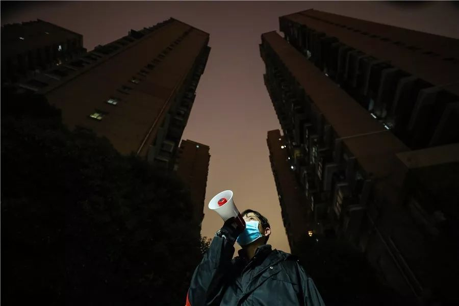

封城11日，武汉众生图
原文链接 备份链接 数据来源：腾讯新冠肺炎疫情实时追踪 截至2月4日上午7时16分， 全国新型肺炎确诊个案超过19700例。 距离武汉封城，已经过去了11天。 普通人被困家中，医护人员依然奋战在一线…… 在抗 …
这里是大学生的新媒体实验室 ∆
轮到你了：这是武汉长江日报摄影记者陈卓参与武汉疫情报道的第16天，调岗一年后他被临时抽调参与一线报道。武汉封城前一天，他安顿好家中老小，封城当天和妻子一起返回武汉，开始过这个充满未知与风险的，前所未有的春节。
追灵车的女孩……
（文中所有视频、图片均为陈卓拍摄）
女孩儿在哭喊，我在流泪
轮：昨晚上看到朋友圈发的短视频，一个女孩子哭喊追着救护车，里面有她的母亲。这是你拍的？
陈卓：是的，这是在湖北省中西医结合医院，也就是新华医院的急诊室外面拍的。她母亲感染了新型冠状病毒性肺炎，发病四五天，在急诊室没抢救过来去世了。作为一个职业新闻记者，我们很回避去拍遗体，所以我没拿相机拍。但我看着那个女孩儿追着灵车，一直哭着喊着妈妈，我用手机录了一段小视频。这些天来，看到很多这种情况，录下这一段，也是一种情绪的表达吧。
采访这么多天，见了太多病人的死亡，和亲属之间的这种离别，心里头非常非常的沉重。那个女孩儿在哭，我在拍的时候也一直在流泪，那段视频你可以看得出来拍得很晃，我真的也很不忍心。但是我还是想让我的朋友圈的人能够看到：武汉，到底发生了什么事情？

封城当天，赶回武汉
轮：今天是你开始这次疫情报道的第几天？这几天的日常报道通常是怎样安排的？每天都在医院跑吗，还是根据报社的任务根据不同主题去完成配图任务，或是做独立摄影报道？
陈卓：2019年年初的时候我就已经不在采编岗位了。我被调到长报集团下面的传媒公司，负责做一些经营性的活动和业务。但做职业摄影记者习惯了，平时碰到好的新闻故事专题线索，还是会去留意。离开这个新闻岗位后，还做过一所山村小学的专题。
这次疫情发生，正好碰上过年，记者比较缺，我家在武汉，就被抽调回来做这个报道。但是抽调之前，我在1月20号的时候已经开始记录了。
1月20号，钟南山院士接受央视采访，说武汉有14名医护人员感染，病毒会人传人的时候，我就知道这个事情非同一般。就和2003年的SARS一样，是一个非常重大的历史事件。我做过10多年记者，这种职业敏感性还是有的。
从1月20号到现在，我已经参与了10多天的疫情报道。中间武汉宣布封城之前的一天晚上，我把家里的老人，我岳父岳母，还有小孩儿提前送回了老家湖北荆门，后来荆门也封城了。第二天早上，也就是武汉封城当天，我和我老婆一起赶回武汉。她不放心我，说来了以后会监督我做好防护工作，然后还可以照顾一下我的生活。她知道我们肯定会很忙。
1月27日，封城之后，空荡荡的桥面。
轮：你刚开始接触新冠病毒疫情报道时，情形怎样？
陈卓：刚开始我们对这个病毒也有点害怕。因为毕竟SARS很厉害，你不知道感染了后，对你的身体会造成什么影响。所以开始没有安排去医院。后来通过人民网、央视等一些比较有公信力的媒体，还有患病医生公布的一些信息了解到，这个病对老年人，尤其是身体患有基础疾病的一些人影响比较大，对年轻人的影响还好的时候，我们也就放松了一些，后来在报社安排下，进医院开始一线的报道。
在做常规报道的同时，我们挖掘一些一线的医护人员的故事。比如说第一个汇报疫情的医生，湖北省中西医结合医院的呼吸科主任张继先。我们已经采访了，也刊发了一些稿件，引起了很大的社会反响。比如《一个120急救班组的武汉12小时》，像这样的一些图片故事，还有来自社区防疫一线的报告。
张继先，湖北省中西医结合医院呼吸与重症医学科主任。12月底最早发现这场疫情苗头，并和院方一起上报。2019年12月26-29日，张继先先后收治了7位肺炎患者，胸片显示与其他病毒性肺炎完全不同。其中7个相似病人4个来自华南海鲜。她将情况迅速向医院汇报，医院立即上报给江汉区疾控中心。12月29日上报省、市卫健委疾控处。省、市卫健委疾控处指示武汉市疾控中心、金银潭医院和江汉区疾控中心，开始流行病学调查。
武汉全线动员
轮：事态发展到今天，外围的各种疫情讨论铺天盖地。你在现场，感受到的周边的情绪和氛围是怎样的？
陈卓：其实在钟南山院士宣布病毒可以人传人以后，武汉的氛围一下子就紧张起来了，每个人在各自岗位上应声而动。在一线这么多天，武汉市的整个动员力量还是非常非常广泛的。所有跟防疫相关的，公务员不管是市一级，还是各区一级，街道一级，社区一级，包括各个局委办，所有人员都基本上在岗位上拼命加班加点，做好各自力所能及的防控工作。现在社区隔离点基本建立起来了，这样可以对病患进行有效隔离。

1月27日，社区工作人员周红（音）陪同一位疑似患者来医院进一步检查确诊。

1月27日，社区工作人员周红（音）陪同一位疑似患者来医院进一步检查确诊。
轮：你看到的一线现在面临的问题有哪些是亟待解决的？
陈卓：我觉得现在的重点虽然是在防疫这一块儿，还是有很多群体需要关注，比如说我现在正在做一个临产孕妇的选题。武汉有一些医院专门接收这样的孕妇，因为现在公共交通关停，有很多爱心人士自发组织车队专门转送这些即将临产的孕妇到定点医院。
轮：在拍摄过程中，给你触动最深的是怎样的场景？
陈卓：我接触的病患大多是疑似病例，因为这个病确诊起来比较麻烦。给我印象最深的还是去世的那个母亲，她女儿的那一声声“妈妈”的那种哭喊，太令人心碎了。这种亲人的生离死别，虽然我们每个人都会经历，但是当你真正经历这样的事情，真的是非常非常的难受。
还有医生，那种大无畏的职业精神，确实非常令人感动。整个春节，有的医生几乎就不回家，住在隔离病区。睡在医院或者定点的一些宾馆，或者是给他们安排的宿舍。基本上从春节前开始，一直到现在，都在加班加点，拼命工作，他们这种精神非常令人感动。
2020年2月4日凌晨一点，看着武汉市金银潭医院“渐冻人”院长张定宇拖着颤抖的双腿，一路疾走忙碌在武汉客厅隔离点现场，真的是心疼😭

春节，武汉120普爱医院一名护士给女儿及家人的回信
轮：看到一位凤凰卫视特约记者被感染，包括他的父母。你们在报道过程中，如何保障自身的安全？如何处理和家人之间的联系与沟通？
陈卓：凤凰网那位记者，虽然不认识，但是作为同行，我非常关心也非常同情。确实，记者这个职业基本上每天都在一线，和一线的防疫人员、医生、民警接触，一定要做好自身的防护。特别是到医院去的那些同事，毕竟那儿病患比较多。
在进出家门的时候，一定要用含氯消毒液，或84消毒水对自己的衣物、设备进行消毒，进门时最好全身喷洒一遍，然后赶紧洗澡洗手。家中如果有老人，建议就不要跟他们呆在一起。把自己先隔离出来，如果说一直参加这个疫情报道，最好等整个事情结束之后再与家人见面。现在通讯设备比较发达，如果你很想念他们，关心他们，手机视频都是非常方便的。如果他们缺生活用品，建议采购送回去的时候，放到门口，物品外包装全部用含氯消毒液或者是84消毒水喷洒一遍。也可以用高度白酒来喷洒，过20分钟再拿进去。

1月28日晚，一名安保人员用喇叭告知居民应对新型冠状病毒措施。
**忠实地去记录，也不要让自己成为一个病原体**
轮：你是经验比较丰富的新闻摄影师，像这次报道，和以往有什么不同？
陈卓：以前参与的一些报道，像汶川大地震、舟曲泥石流、东方之星沉没，都是突发事件。这次确实是我从业这么多年来，报道的一个比较陌生的领域，医学领域的公共卫生事件。采访中有很多不确定性，这个病毒你也不知道它到底在哪里，也不知道它何时会出现在你身边。区别最大就在这儿吧，一种看不见的危险。
轮：在这样的情形下，如何拍好照片？对自己有什么要求吗？
陈卓：我觉得好的新闻照片，肯定是有情感的照片。一个冰冷的旁观者，随意按下快门，照片肯定打动不了读者。所以一定要注意抓住拍摄对象流露情感的那一瞬间。这次采访对自己也没有什么要求，保护好自己。保护好家人，不要让自己成为一个病原体就好了。忠实地记录吧，还不知道这样的日子会持续多久。有时候心情很down，这不仅仅只是一场传染病，从全局看，对经济的影响，特别是对私营业主的影响非常大，还有对我们每一个普普通通的人特别是打工者来说。今年太难了！
因为封城和市区私家车禁行，空荡的鹦鹉洲长江大桥上，行车寥寥，只有那一身洁白闪着蓝光的救护车，如暗夜里的精灵，为这座寂寞的城市送来光明。
采编 | 青木
相关报道


原文链接 备份链接 数据来源：腾讯新冠肺炎疫情实时追踪 截至2月4日上午7时16分， 全国新型肺炎确诊个案超过19700例。 距离武汉封城，已经过去了11天。 普通人被困家中，医护人员依然奋战在一线…… 在抗 …
原文链接 备份链接 新冠肺炎疫情下的2020年农历新年，被封在武汉这座城内的不仅有当地市民，还有数以万计的外来务工人员。他们没有选择返乡，而是选择成为这座城市的坚守者，继续维持城市系统的运转。一边忙碌，一边观察，他们亲历着武汉或宏大或细微 …
原文链接 备份链接 封城已过去一周，在这个谈武汉人、湖北人色变的时候，我们想要好好看一看他们。今天我们挑选的几篇读者来稿，围绕着湖北的武汉和黄冈，讲述他们在旋涡和风暴中心的日子。他们有些住在城市，有些住在乡村和小镇。环境的不同给了他们不 …
原文链接 备份链接 昨天，我们发起了征集，请身在疫区的同胞、奋战在疫情第一线上的医护人员、全国各地留守家中防疫的人们讲述这个春节发生的真实故事，在后台收到的近百份留言中，我们筛选并刊登如下，我们是倾听者，也是见证者—— 01 这个春节，是 …
原文链接 备份链接 这段时间，除了关于疫情本身的讨论，一些新的话题不断加入。单读征文今天的来信，来自一位选择离开家乡的武汉人。武汉人在外省的处境令人堪忧，从直面病毒的恐慌，到遭遇歧视的愤懑，武汉人不仅是这场疫情中最直接的受害者，还成为后续 …